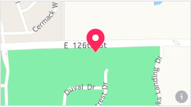

Date: 25th Nov 2018, 12:00pm-14:00pm
18 Park Square, Granite Falls, North Carolina 28630

## Hosted by Social Roast Coffee ##
We are doing a training night with our Baristas where we will be practicing our coffee brewing skills for ALL of our drinks! We are inviting the public to come in and drink all the coffee you want and we WILL be taking request! Help us get better and drink great coffee while you do it! $5 at the door gets you all the coffee you would like until the event is over! We hope to see you!
Date: 08th Dec 2018, 06:00am-03:00pm
13279 E. 126th St, Fishers, Indiana 46037
## Secret Families Christmas Charity of Hamilton County - in ##
Secret Families Christmas Charity of Hamilton County provides needy families with a complete Christmas - gifts, a Christmas tree and ornaments, Christmas dinner, and household and hygiene products. They only help a family once, so it's a lift up, not a hand out. Volunteers are needed to help us shop, wrap, and deliver Christmas to more than 60 families this year! Visit our website to learn more or to volunteer: http://www.secretfamilieshc.org/volunteer/